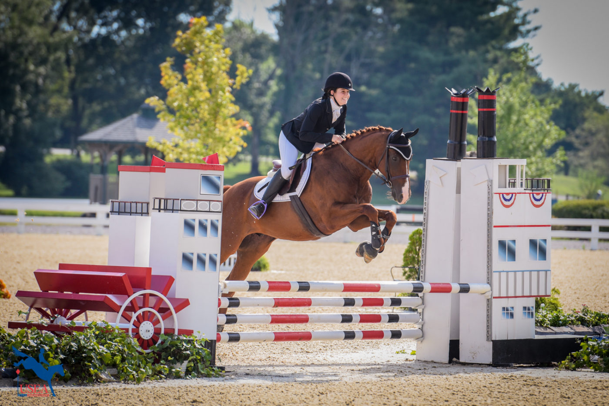
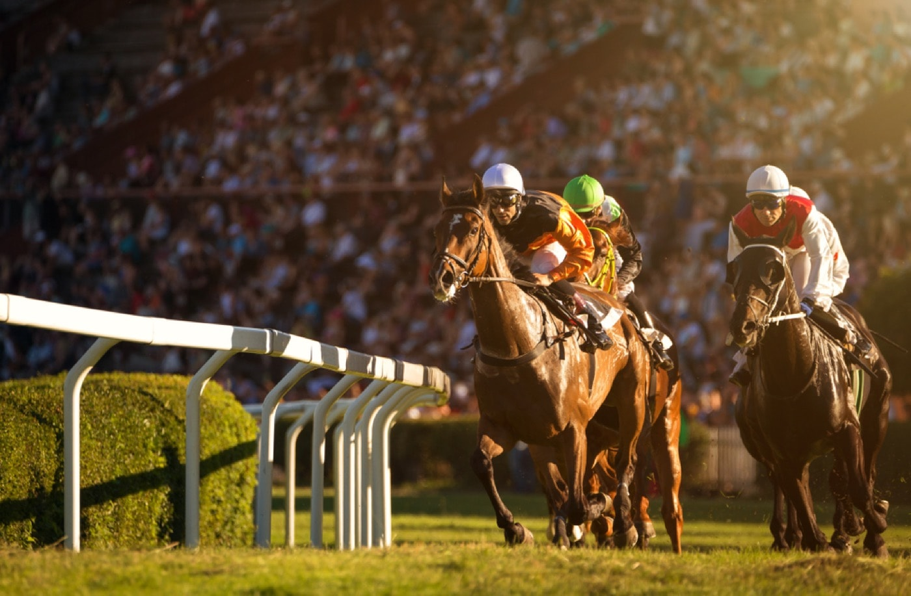
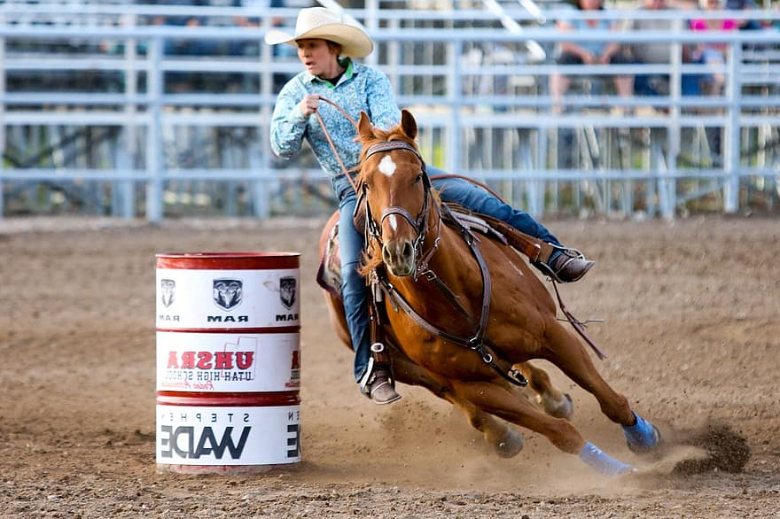

-

Skoki przez przeszkody
Skoki przez przeszkody to dynamiczna i widowiskowa dyscyplina, w której jeździec i koń pokonują serię przeszkód na czas. Przeszkody mogą być różnej wysokości i szerokości, a celem jest przejście przez trasę z jak najmniejszą liczbą błędów, takich jak odmowa przeskoczenia lub upuszczenie przeszkody.
-

Ujeżdżenie
Ujeżdżenie to dyscyplina polegająca na precyzyjnym wykonywaniu z góry określonych figur i ruchów przez jeźdźca i konia. Celem jest osiągnięcie harmonii, elastyczności i posłuszeństwa konia, wykazując kontrolę nad jego ruchami. Ujeżdżenie wymaga dużego skupienia, zrozumienia biomechaniki konia oraz precyzyjnych komunikacji między jeźdźcem a zwierzęciem.
-

Wyścigi
Wyścigi konne obejmują różnorodne formy, takie jak wyścigi galopowe, płaskie, przeszkód czy też wyścigi na długim dystansie. Celem jest pokonanie trasy w jak najkrótszym czasie. Ta ekscytująca dyscyplina wymaga od jeźdźców umiejętności taktycznych, szybkości, wytrzymałości oraz zdolności do kontrolowania konia w dynamicznych warunkach.
-

Western
Western to zbiorcza nazwa dla różnorodnych dyscyplin jeździeckich o charakterze tradycyjnym dla dzikiego zachodu, takich jak rodeo, konkurencje zręcznościowe (np. spinning, sliding), czy zawody wierzchowe (np. trail, reining). Wymagają one umiejętności pracy z koniem w stylu typowym dla kowbojów i charakteryzują się pewnymi specyficznymi technikami jeździeckimi, takimi jak jazda jedną ręką na luzie czy pracowanie bydłem.